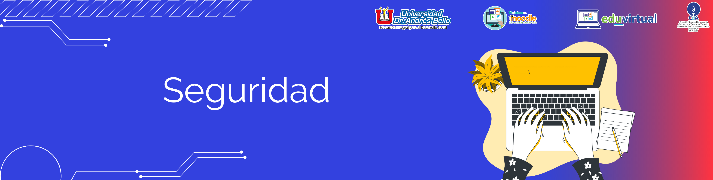

Formularios, URL y Deploy en Django
6. Seguridad
Contenido
Poder crear nuevas publicaciones haciendo click en un enlace es genial. Pero, ahora mismo, cualquiera que visite tu página podría publicar un nuevo post y seguro que eso no es lo que quieres. Vamos a hacer que el botón sea visible para ti pero no para nadie más.
Abre blog/templates/blog/base.html en el editor, busca el div page-header y la etiqueta del enlace (anchor) que pusimos antes. Debería ser algo así:
<a href="{% url 'post_new' %}" class="top-menu"><span class="glyphicon glyphicon-plus"></span></a>Vamos a añadir otra etiqueta {% if %} que hará que el enlace sólo parezca para los usuarios que hayan iniciado sesión en el admin. Ahora mismo, ¡eres sólo tú! Cambia la etiqueta <a> para que se parezca a esto:
{% if user.is_authenticated %}
<a href="{% url 'post_new' %}" class="top-menu"><span class="glyphicon glyphicon-plus"></span></a>
{% endif %}Este {% if %} hará que el enlace sólo se envíe al navegador si el usuario que solicita la página ha iniciado sesión. Esto no protege completamente la creación de nuevas entradas, pero es un buen primer paso. Veremos más sobre seguridad en el libro de extensiones.
Recuerdas el icono de "editar" que acabamos de añadir a nuestra página de detalles? También queremos añadir lo mismo aquí, así otras personas no podrán editar posts existentes.
Abre blog/templates/blog/post_detail.html en el editor y busca esta línea:
<a class="btn btn-default" href="{% url 'post_edit' pk=post.pk %}"><span class="glyphicon glyphicon-pencil"></span></a>Cámbiala a lo siguiente:
{% if user.is_authenticated %}
<a class="btn btn-default" href="{% url 'post_edit' pk=post.pk %}"><span class="glyphicon glyphicon-pencil"></span></a>
{% endif %}Dado que es probable que estés conectado, si actualizas la página, no verás nada diferente. Carga la página en un navegador diferente o en una ventana en modo incógnito ("privado" en Edge, Chrome, Firefox, dependiendo del navegador configurado por defecto en el sistema operativo) y veremos que el link no aparece, y el icono tampoco.
Obra publicada con Licencia Creative Commons Reconocimiento Compartir igual 4.0